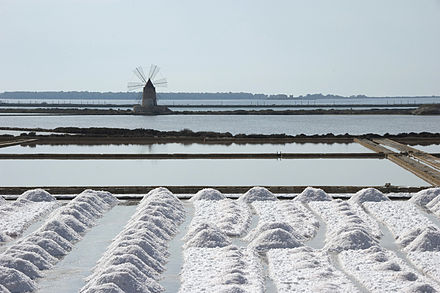
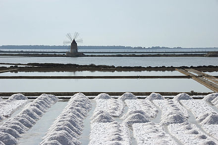

Spoznajte soľnú cestu v Taliansku
Ponúkame vám exkluzívny zájazd po soľnej ceste v Taliansku, na Sicílii
Pozri si obrázkyČo všetko spoznáte?
Petralina Soprana
Museo de sale
Riserva naturale integrale Saline di Trapani e Paceco
Krásne stredoveké mesto v ktorom sa nachádza soľná Petralina. Vrámci komplexu sa nachádza aj múzeum, v ktorom môžete obdivovať artefakty soľného sochárstva, ale aj sa zoznámiť s históriou ťaženia soli na Sicílii.
Múzeum Soli, jednoduché rodinné múzeum v historickom veternom mlyne ponúka nádherný pohľad na priemysel výroby soli v meste Trapani. Sprievodcovia tu občas privítajú návštevníkov strašidelným vydaním melódií starých robotníkov, vysvetlia vám používanie nástrojov a mechanizmov používaných lokálne na získavanie soli.
je talianska prírodná rezervácia v provincii Trapani medzi obcami Trapani a Paceco na západnom pobreží Sicílie. Bola založená v roku 1995 a v rámci Ramsarského dohovoru. Okrem pozoruhodnej stredomorskej flóry a fauny sa v starom soľnom mlyne nachádza múzeum práce. Vrámci rezervácie sa nachádzajú impozantné soľné pláne a jazerá.
Okrem zaujímavého a jedinečného programu na soľnej ceste po Sicílii si budete môcť užiť aj krásne pláže a historické juhotalianské mestečká.
| Dĺžka zájazdu | 6 dní |
|---|---|
| Hotel | Hotel Palazo Sitanno |
| Cena pre dospelú osobu | 845 eur |
| Cena pre dieťa/seniora | 745 eur |
| Cena zahŕňa | spiatočnú letenku, ubytovanie na 5 nocí s polpenziou, vstupy a sprievodcu na soľnej ceste |
 
